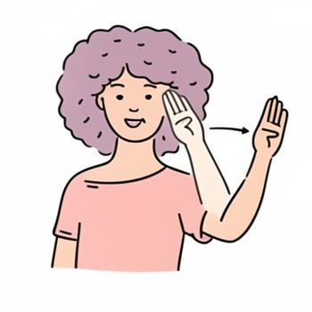

Learning...
Raise your hand up to the side of your forehead near your temple, keep your fingers together and your palm facing outward. Then move your hand outward and slightly away from your head, like a small wave starting from your forehead.
Hello
